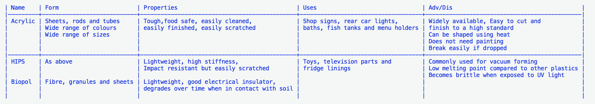
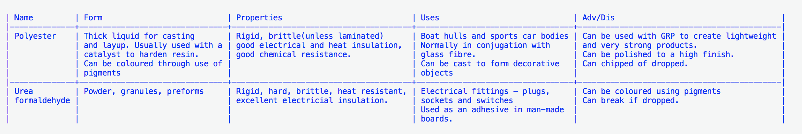

Thermoforming and thermosetting plastics
Table of Contents
1 Introduction
In this section you should know about the types, properties, structure and uses of thermoforming and thermosetting polymers.
- Polymers are everywhere and have a wide range of uses.
- A synthetic polymer is usually made from oil based petrochemicals, but coal and gas can also be used.
- There are two main types – thermoset and thermoformed.
2 Polymers
Thermoforming polymers
One of the their biggest advantages is that they can be recycled – less waste etc.
- The list of thermoforming polymers is extensive – including:
- Acrylic
- High impact polystyrene (HIPS)
- Biodegradable polymers i.e. Biopol.

Thermosetting polymers
One of the their biggest advantages is that they are heat, chemical and solvent safe i.e. they will not change shape while being exposed to the above conditions.
- The list of thermoforming polymers is extensive – including:
- Polyester resin
- Urea formaldehyde

Summary
- Thermoforming plastics can be recycled
- Thermosetting plastics cannot be recycled
- Most synthetic polymers are made from crude oil
- Polymers include the following materials: acrylic and high-impact polystrene.
You try
- Research the system used to identify which polymers can be recycled.
- Identify a range of polymers that can be recycled using this system.
- Research and give examples of the full properties of polymers around the house:
- Insulator of heat
- Insulator of electricity
- Toughness
3 Recap
Exam style Questions
- Explain the differences in structure of thermoforming and thermosetting polymers.
- Explain one reason why some children’s toys are made from HIPS.
- Name two polymers that are good thermal insulators.
- Name three things often made from thermoforming polymers.
- Draw the structure of a thermosetting polymer